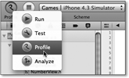
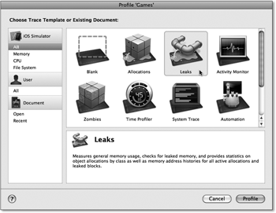
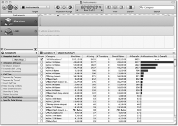
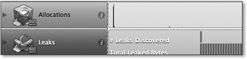
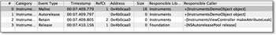
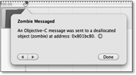
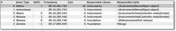
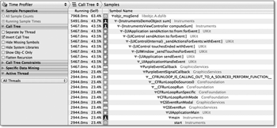
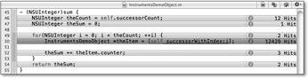
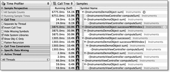

Zum Online-Shop
Zum Online-Shop
5.5 Was Sie schon immer über Instruments wissen wollten, aber nie zu fragen wagten
Und nun zu etwas ganz anderem: Wie gut kennen Sie eigentlich noch die Speicherverwaltungsregeln? In welchen Fällen hält noch mal eine Variable das Objekt, auf das sie verweist? Wenn Sie sich jetzt unsicher sind, dürfen Sie natürlich gerne noch mal zurückblättern. Aber auch dann, wenn Sie die Regeln und ihre Anwendung beherrschen, unterläuft Ihnen wahrscheinlich von Zeit zu Zeit der eine oder andere Speicherverwaltungsfehler. Wenn Sie Glück haben, sendet Ihnen Ihr Programm zarte Hinweise. Im schlechtesten Fall macht es das aber nur bei den Nutzern Ihrer App. Nach Murphys Gesetz – »Was schiefgehen kann, geht schief« – ist Letzteres der Regelfall.
Sie können und sollten den Analyzer über Ihren Programmcode laufen lassen und versuchen, möglichst alle Warnungen zu beseitigen. Aber leider findet auch der Analyzer nicht alle Fehler. Auch mit dem Debugger finden Sie nicht alle Schwachstellen, da dieser Pedant einen viel zu kleinteiligen Blick auf Ihre App wirft. Doch es gibt ein Gegenmittel: Instruments und Arbeit. Da Sie von Arbeit sicherlich schon mal gehört haben, dreht sich dieser Abschnitt hauptsächlich um Instruments.
Abbildung 5.23 Starten von Instruments
Instruments ist ein Programm aus den Entwicklungswerkzeugen von Apple, das Sie bereits zusammen mit dem SDK installiert haben. Es erlaubt die Aufzeichnung und anschließende Analyse unterschiedlicher Messwerte Ihrer Programme, um deren Schwachstellen zu finden. Es kann Ihnen aber nur Hinweise geben, wo Sie nach den Schwachstellen suchen müssen. Es macht Ihnen leider keine Vorschläge zu deren Behebung.
Instruments funktioniert dabei nach einem Baukastensystem, bei dem jeder Baustein ein Messinstrument ist. Sie können für Ihre Instruments-Sitzungen diese Bausteine beliebig kombinieren. Zurzeit bietet Instruments ungefähr fünfzig solcher Messinstrumente an, von denen allerdings einige Mac OS X vorbehalten sind.
Sie starten Instruments, indem Sie den Button Run oben links in Xcode gedrückt halten und im Dropdown-Menü den Punkt Profile auswählen (siehe Abbildung 5.23).
Abbildung 5.24 Auswahldialog in Instruments
Nach dem Start öffnet Instruments den in Abbildung 5.24 dargestellten Auswahldialog, mit dem Sie ein bestehendes Instruments-Dokument oder eine Dokumentvorlage auswählen können. In der Regel benutzen Sie die zweite Option. Hier bietet Ihnen Instruments bereits eine Palette mit vorkonfigurierten Messszenarien an. Alternativ können Sie auch eine leere Vorlage auswählen, die Sie individuell nach Ihren Bedürfnissen konfigurieren können. Für den Anfang sollten Sie aber ein vorkonfiguriertes Szenario verwenden. Falls Instruments Ihr Programm sofort startet, ohne vorher den Auswahldialog anzuzeigen, haben Sie wahrscheinlich das Programm noch in Instruments geöffnet. Schließen Sie also am besten immer alle Fenster von Instruments, bevor Sie eine neue Analyse starten.
| Operation am lebenden Programm |
|
Auf der beiliegenden DVD finden Sie das Projekt Instruments, das verschiedene Analysesituationen bereitstellt. Es enthält absichtlich Schwachstellen für die nachfolgend beschriebenen Messszenarien. Die Schwachstellen im Beispielprojekt sind relativ offensichtlich. Wahrscheinlich verstecken sie sich in Ihren Programmen wesentlich besser. Hier kommt das zweite Gegenmittel ins Spiel: Arbeit. |
5.5.1 Spiel mir das Lied vom Leak
Eine der wichtigsten Aufgaben von Instruments ist das Auffinden von Speicherlecks. Sie führen im schlimmsten Fall nicht direkt zu einem Fehlverhalten Ihres Programms. Stattdessen erhält es vom Betriebssystem Speicherwarnungen, deren Verarbeitung die App verlangsamen. Schließlich stürzt das Programm dann doch ab, wobei sich die Absturzsituation nur sehr schwer reproduzieren lässt.
Abbildung 5.25 Speicheranalyse mit Instruments
Öffnen Sie das Instruments-Projekt in Xcode, und starten Sie Instruments wie oben beschrieben. Im Auswahldialog wählen Sie die Schablone Leaks aus, mit der Sie Speicherlecks finden können. Instruments startet Ihre App, abhängig von Ihrer Auswahl in Xcode, im Simulator oder auf einem iOS-Gerät. Außerdem öffnet es das in Abbildung 5.25 dargestellte Fenster. Die Schablone erzeugt zwei Messinstrumente, die Sie in der linken Spalte oben finden. Mit Allocations messen Sie den Speicherverbrauch Ihrer App, während Leaks die Speicherlecks aufzeichnet.
Nach dem Start erscheinen neben Allocations ein paar blaue senkrechte Striche, während der Bereich neben Leaks leer bleibt. Da das Programm bislang auch noch kein Speicherleck erzeugt hat, ist das auch richtig so. Wenn Sie den Knopf Make Leak in der iPhone-App Instruments drücken, erscheinen im Leaks-Bereich ein roter und mehrere blaue Balken (siehe Abbildung 5.26). Die roten Balken kennzeichnen das Auftreten von Speicherlecks, während die blauen Balken das Verhältnis der Leckgrößen im Verlauf der Zeit darstellen. Dabei ist nicht die absolute Höhe der Balken interessant, sondern die Höhe und Verteilung der Stufen. Je höher dabei eine Stufe ist, umso größer ist das dazugehörende Leck. Je dichter die Stufen beieinander stehen, umso mehr Speicherlecks weist ein Programmbereich auf. Sie können durch das erneute Drücken des Buttons weitere Speicherlecks erzeugen und so die Stufenbildung beobachten.
Abbildung 5.26 Grafische Anzeige eines Speicherlecks in Instruments
Oben rechts im Fenster befindet sich der Button Stop. Damit können Sie die Ausführung der App beenden, wenn Sie genug Leaks gesammelt haben. Durch Auswählen des Leaks-Instruments wie in Abbildung 5.26 zeigt Instruments im unteren Fensterbereich Details dazu an. In der linken Spalte können Sie die Einstellungen des Instruments anpassen, während der Bereich auf der rechten Seite die gefundenen Speicherlecks auflistet (siehe Abbildung 5.27).
| Einstellungssache |
|
Leaks sammelt die Speicherlecks in regelmäßigen Intervallen. Die Intervalllänge ist standardmäßig auf 10 Sekunden eingestellt. Über das Eingabefeld Snapshot interval können Sie diesen Wert anpassen. Durch Drücken des Buttons Snapshot Now sammelt Leaks augenblicklich alle Speicherlecks. Wenn der Inhalt der Speicherlecks Sie interessiert, sollten Sie das Häkchen für Gather Leaked Memory Contents setzen. Mit den Einstellungen unter der Überschrift Call Tree können Sie die Ausgabe des Aufrufstapels beeinflussen. |
Abbildung 5.27 Details des Leaks-Instruments
Wenn Sie den Pfeil eines Speicherlecks in der Spalte Address anklicken, gelangen Sie zu den Details des Lecks. Hier können Sie unter anderem den
Referenzenzähler und die Erzeugungszeit relativ zum Programmstart sehen. Durch einen
Doppelklick auf die Zeile öffnet Instruments eine Quellcodeanzeige mit der Zeile,
die das leckende Objekt erzeugt hat. Außerdem können Sie sich über  + beziehungsweise den Menüpunkt View · Extended Detail den Aufrufstapel anzeigen lassen. Sie bekommen darüber in vielen Fällen einen recht
guten Hinweis, wo Sie mit der Fehlersuche für die Speicherverwaltung beginnen sollten.
Für die Speicherlecks, die der Button Make Leak erzeugt, zeigt Instruments die folgende Zeile an:
+ beziehungsweise den Menüpunkt View · Extended Detail den Aufrufstapel anzeigen lassen. Sie bekommen darüber in vielen Fällen einen recht
guten Hinweis, wo Sie mit der Fehlersuche für die Speicherverwaltung beginnen sollten.
Für die Speicherlecks, die der Button Make Leak erzeugt, zeigt Instruments die folgende Zeile an:
id theLeak = [[InstrumentsDemoObject alloc] init];
Nach den Speicherverwaltungsregeln muss die Methode makeLeak diesem Objekt entweder ein release oder ein autorelease senden. Dieser Speicherverwaltungsfehler ist also ziemlich offensichtlich. Leider ist das in der Praxis in vielen Fällen nicht so einfach.
Über den Button Make Attribute Leak können Sie komplexere Lecks erzeugen. Damit Instruments ein Speicherleck erkennt, müssen Sie diesen Button mindestens zweimal anklicken.
Abbildung 5.28 Detailanzeige für ein komplexeres Leck
Wenn Sie sich die Details dieses Lecks ansehen, zeigt Ihnen Instruments vier Zeilen statt einer an (siehe Abbildung 5.28). Dabei enthält jede Zeile eine Speicherverwaltungsoperation, die das Programm auf dem Objekt ausgeführt hat. Die jeweilige Operation können Sie der Spalte Event Type entnehmen. Da das alle Speicherverwaltungsoperationen auf dem Objekt sind, wurden bei mindestens einer davon die Speicherverwaltungsregeln missachtet. Durch einen Rechtsklick auf die Titelleiste können Sie einzelne Spalten ausblenden und so die Darstellung an Ihre Bedürfnisse anpassen.
In der Spalte Responsible Caller sehen Sie die Methode, die die Operation aufruft. In der vierten Zeile steht dort [NSAutoreleasePool release].
| Instruments und die Systembibliotheken |
|
Zu dieser Zeile kann Ihnen Instruments keinen Quellcode anzeigen, da es keinen Zugang dazu hat. Für die Überprüfung Ihrer Speicherverwaltung ist das auch nicht notwendig. Außerdem sollten Sie die Möglichkeit, dass Cocoa Touch ein Speicherleck erzeugt, erst nach Ausschluss aller anderen Möglichkeiten in Betracht ziehen.[24](Es gibt aber durchaus einige bekannte Speicherlecks in Cocoa Touch. Aber die Wahrscheinlichkeit, dass Ihr Code den Fehler verursacht, ist wesentlich höher.) |
Die ersten beiden angezeigten Zeilen verweisen auf den Convenience-Konstruktor object der Klasse InstrumentsDemoObject. Diese Methode enthält nur eine Alloc-Init-Autorelease-Aufrufkette und hält sich offensichtlich an die Speicherverwaltungsregeln. Bleibt also nur noch die Methode makeAttributeLeak in der Klasse InstrumentsViewController als mögliche Ursache übrig (siehe Listing 5.58). Auch diese Methode scheint sich an die Speicherverwaltungsregeln zu halten, und beim ersten Aufruf erzeugt diese Methode ja auch noch kein Leck.
- (IBAction)makeAttributeLeak {
attributeLeak = [[InstrumentsDemoObject object] retain];
}
Listing 5.58 Speicherleck bei Attributzuweisung
Wenn Sie die Methode aber wiederholt ausführen, gibt sie das Objekt, auf das attributeLeak verweist, nicht frei. Nach den Speicherverwaltungsregeln muss sie das aber machen, da die Variable das Objekt hält. Um diesen Speicherverwaltungsfehler zu beheben, können Sie die Anweisung [attributeLeak release]; vor die Zuweisung einfügen. Da attributeLeak eine Property ist, sollten Sie lieber an dieser Stelle den Setter verwenden.
- (IBAction)makeAttributeLeak {
self.attributeLeak = [InstrumentsDemoObject object];
}
Listing 5.59 Methode ohne Speicherleck
| Speicherverwaltung |
|
Der Speicherverwaltungsfehler in der Methode makeAttributeLeak ist für Anfänger schwer zu erkennen, und auch der Analyzer in Xcode 4 findet ihn nicht. Sie können solche Fehler aber durch die konsequente Verwendung von Propertys und Accessoren vermeiden. |
5.5.2 Ich folgte einem Zombie
Was passiert eigentlich, wenn Sie ein Objekt hinter einem Dangling Pointer weiterverwenden? Die Antwort ist nichts für schwache Nerven, lieber Leser: Es entsteht ein Zombie, der in Ihrem Speicher Angst und Schrecken verbreitet. Das Schlimme an Zombies ist, dass das von ihnen angerichtete Unheil erst lange nach seiner Entstehung auftreten kann.
In Ihrer App entsteht ein Zombie, wenn Sie einen Verweis auf ein Objekt verwenden, nachdem Sie es freigegeben haben. Die Freigabe muss dabei aber nicht unbedingt über die gleiche Variable wie der Zombiezugriff erfolgen. Das erschwert natürlich die Suche nach diesen Bestien.
Die Beispiel-App Instruments erlaubt Ihnen auch die Erzeugung von Zombies. Sie brauchen dabei aber keine Angst zu haben. Sie machen das ja unter Laborbedingungen, und da kann Ihnen nichts passieren – na ja, fast. Starten Sie die App über den Profile-Button aus Xcode in Instruments, und wählen Sie die Schablone Zombies im Auswahldialog aus.
Abbildung 5.29 Instruments hat einen Zombie entdeckt.
Nach dem Start zeigt Ihnen Instruments den Speicherverbrauch der App an. Wenn Sie zweimal auf den Button Make Zombie klicken, hält die Ausführung an. Instruments zeigt einen Dialog wie in Abbildung 5.29. Durch Anklicken des Pfeils neben der Speicheradresse gelangen Sie zu einer Auflistung der Speicherverwaltungsoperationen, die das Programm auf dem Objekt ausgeführt hat.
Abbildung 5.30 Speicherverwaltungsoperationen eines Zombies
Die letzte Zeile enthält die Methode oder Funktion, die auf den Zombie zugegriffen
hat. Es ist die Systemfunktion NSLogv, auf deren Quellcode Sie keinen Zugriff haben. Sie können sich über den Aufruf von
View · Extended Detail beziehungsweise + den Aufrufstapel zu dieser Anweisung auf der rechten Seite des Fensters anzeigen
lassen. Der Stapel stellt alle Systemsymbole in grauer Schrift mit einem farbigen
Icon dar. Dagegen stellt er die Symbole aus Ihrem Programmcode in schwarzer Schrift
mit einem schwarzen Icon dar. Abbildung 5.31 zeigt einen Ausschnitt eines Aufrufstapels.
Sie können durch einen Doppelklick auf diese Symbole in die entsprechende Stelle des
Quelltextes springen.
Abbildung 5.31 Detailansicht und Ausschnitt des Aufrufstapels
Der Zombie entsteht durch das Release in der fünften Zeile, wie Sie an dem Referenzenzähler sehen können. Da dieses Release der Autoreleasepool sendet, kann diese Zeile nicht direkt für den Fehler verantwortlich sein. Der Verursacher ist entweder das Release der zweiten oder das Autorelease der vierten Zeile. Da sich der Convenience-Konstruktor object an die Speicherverwaltungsregeln hält, bleibt überraschenderweise nur die Methode makeZombie als Kandidat übrig.
- (IBAction)makeZombie {
id theZombie = [InstrumentsDemoObject object];
NSLog(@"zombies=%@", self.zombies);
[self.zombies addObject:theZombie];
[theZombie release];
}
Listing 5.60 Zombie-Erzeugung
Da die Methode object nicht auf die erste Speicherverwaltungsregel passt, hält die Variable theZombie nicht das Objekt. Also darf sie das Objekt auch nicht freigeben.
5.5.3 Time Bandits
Instruments hilft Ihnen aber nicht nur beim Finden Ihrer Speicherverwaltungsfehler, sondern es kann auch andere Schwachstellen des Programms aufdecken. Zu den gesuchtesten Schwachstellen in Programmen gehören die Methoden und Funktionen, die Ihr Programm langsam und schwerfällig machen.
Je öfter Sie im Instruments-Beispielprogramm auf den Button Compute Sum drücken, umso länger braucht die App für die Berechnung der angezeigten Werte. Um dem Zeitfresser auf die Spur zu kommen, starten Sie das Programm in Instruments aus Xcode heraus. Im Auswahldialog wählen Sie die Schablone Time Profiler aus.
Nach dem Start der App bleibt der untere Bereich zunächst leer. Wenn Sie einige Male den Button Compute Sum drücken, füllt Instruments die Anzeige mit Funktions- und Methodennamen. Stellen Sie die Sortierung nach der ersten Spalte, Running (Self), absteigend ein. Sie zeigt Ihnen den absoluten und den relativen Zeitverbrauch für die Ausführung des jeweiligen Symbols. Nach mehrfachem Drücken des Buttons erscheint das Symbol objc_msgSend als oberstes Element in der Anzeige.
Abbildung 5.32 Aufgeklappter Aufrufstapel
Hinter jedem Symbol verbirgt sich ein Aufrufstapel, den Sie sich durch Anklicken des
Dreiecks links neben dem Symbol ansehen können. Wenn Sie dabei die  -Taste gedrückt halten, klappen Sie den kompletten Baum auf einmal auf. Die Anzeige
sollte dann wie in Abbildung 5.32 aussehen.
-Taste gedrückt halten, klappen Sie den kompletten Baum auf einmal auf. Die Anzeige
sollte dann wie in Abbildung 5.32 aussehen.
Das zweite Symbol in dem Stapel ist die Methode sum in der Klasse InstrumentsDemoObject. Anscheinend hat diese Methode einen gesegneten Hunger auf Ihre wertvolle Zeit. Durch einen Doppelklick gelangen Sie zu einer Ansicht des entsprechenden Quellcodes. Dort sehen Sie aber nicht nur den Quelltext, sondern auch Prozentzahlen an einigen Zeilen. Die Ansicht gibt jeweils die relative Zeit für die Ausführung der Zeile an. Anscheinend verbraucht die Methode sum ihre Rechenzeit fast komplett im Schleifenrumpf für den Aufruf der Methode successorWithIndex: (siehe Abbildung 5.33).
Abbildung 5.33 Anzeige des Zeitverbrauchs im Quelltext
Wenn Sie auf der linken Seite unter der Rubrik Call Tree die Optionen Show Obj-C Only und Hide System Libraries einschalten, schrumpft die Anzeige auf der rechten Seite zusammen. Sie sehen dann nur noch die von Ihnen erstellten Methoden. Dort finden Sie auch die Methode successorWithIndex: (siehe Abbildung 5.34). Durch einen Doppelklick auf die Zeile gelangen Sie auch hier zur Quellcodeansicht. Diese Methode verbraucht fast ihre komplette Rechenzeit für den Aufruf der Property successor.
Abbildung 5.34 Gefilterter Aufrufstapel
Da es sich um eine synthetisierte Property handelt, sieht das zunächst nach einer Sackgasse aus. Ein einzelner lesender Property-Aufruf verbraucht aber natürlich nicht so viel Zeit. Aber er befindet sich in einer Schleife, und die Methode successorWithIndex: befindet sich ebenfalls in einer Schleife. Die Anzahl der Schritte der inneren Schleife hängt von dem Parameter inIndex ab. Dessen Wert ist der Schleifenindex der äußeren Schleife. Wenn die äußere Schleife bis 8 läuft, dann ruft die App successorWithIndex: insgesamt 8-mal auf und liest die Property 0 + 1 + 2 + 3 + 4 + 5 + 6 + 7 = 28-mal aus. Bei einer Länge von 1000 kommen schon 500.500 Zugriffe zustande, und bei 8000 sind es schon über 32 Millionen. Das verbraucht natürlich auch einiges an Rechenzeit.
Zur Behebung dieses Performanceleaks ist also eine Neuimplementierung von sum notwendig. Anstatt auf die verkettete Liste über einen Index zuzugreifen, sollte sich die Schleife lieber über einen Zeiger durch die Liste hangeln:
- (NSUInteger)sum {
NSUInteger theSum = 0;
InstrumentsDemoObject *theItem = self;
while(theItem) {
theSum += theItem.counter;
theItem = theItem.successor;
}
return theItem;
}
Listing 5.61 Effizientere Implementierung der Summenberechnung
Dieses Verfahren besucht jedes Listenelement nur einmal. Bei einer Listenlänge von 8000 Einträgen liest diese Implementierung den Nachfolger auch nur 8000-mal aus.
Ihr Kommentar
Wie hat Ihnen das <openbook> gefallen? Wir freuen uns immer über Ihre freundlichen und kritischen Rückmeldungen.


{kind=link}
{kind=link}
{kind=link}
{kind=link}
{kind=link}
{kind=link}
{kind=link}
{kind=link}
{kind=link}
{kind=link}
{kind=link}
{kind=link}